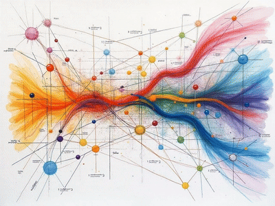

Interships & Research
Research project that I am currently working on:

Making Artificial Brain
Using Deep Reinforcement Learning to create artificial brain: Virtual Neural Lab.

Meta Planning as Inference
Investigating reinforcement learning & meta learning challenges via probabilistic latent inference.

Computational Neural Topology
Researching into the high dimensional topological space generated by VNL system.
Lightweight Agent-based Multi-collaboration Framework
Farmework for tackling LM multi-agent collboration in adversarial environment.

Multimodal Model Embodied Simulation
Reverse engineering from a embodied perspective.